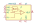

<table>
<tr>
<th>Symbol</th>
<th>Description</th>
</tr>
<tr>
<td><br>AD813</td><td>Description: Single Supply, Low Power, Triple Video Amplifier, DIP-14/SOIC-14<br>Keys: triple opamp<br>Datasheet: <a href="https://www.analog.com/media/en/technical-documentation/data-sheets/AD813.pdf">https://www.analog.com/media/en/technical-documentation/data-sheets/AD813.pdf</a></td>
</tr>
<tr>
<td><br>MAX453</td><td>Description: CMOS video amplifier with input multiplexer, DIP-8/SOIC-8<br>Keys: amplifier<br>Datasheet: <a href="https://datasheets.maximintegrated.com/en/ds/MAX452-MAX455.pdf">https://datasheets.maximintegrated.com/en/ds/MAX452-MAX455.pdf</a></td>
</tr>
</table>
